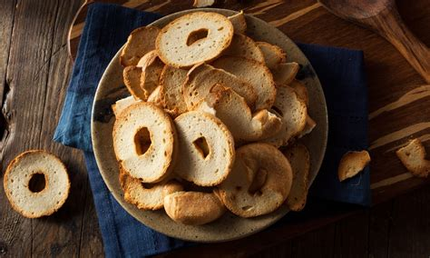

Bagel Chips Recipe

Link to the original!
Description
A way to make use of leftover bagels for favorite snack!
Ingredients
- 3 bagels
- 2 tablespoon olive oil
- sea salt
Steps
- Preheat the oven to 300 degrees F.
- Slice the bagels in half using a bread knife, and then slice rounds of bagel from each half. The slices will be slightly thicker on one side than the other because of the curvature of the bagel. This is fine, but try and get all the slices about the same thickness.
- Place all the bagel pieces in a bowl and toss while drizzling with oil. When every piece is evenly coated, split them between two baking sheets, and spread them out in a single layer.
- Bake in the oven for 15-20 minutes, or until golden brown and crisp. If the bagel chips on one side of the pan start browning before the other, rotate the pans so that the other side browns evenly.
- When the chips are done, put them in a bowl while they are still hot and toss with your favorite powdered seasoning.